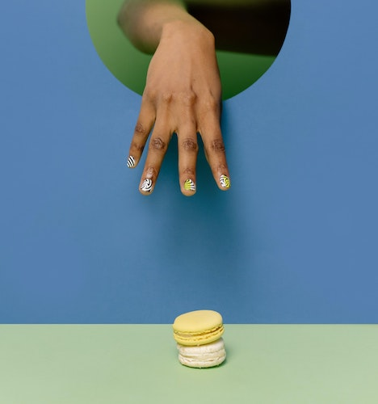

Macarons

Delicate sandwich cookies that can be flavored and decorated to your liking.
These French treats have a light, crisp shell that gives way to chewy texture within. You can eat them plain or add fillings such as caramel, buttercream, Nutella, and more!
Ingredients
- 100g Egg whites (about 3-4 large egg whites)
- 1g Cream of tartar
- 1/2 teaspoon Vanilla extract (or other flavoring)
- 80g Superfine sugar
- 125g Almond flour
- 125g Confectioner's sugar
- Macaron filling of your choice
- optional: 1-2 drops Gel food coloring
Instructions
- One day before making macarons, wipe down a large bowl with lemon juice or vinegar and add the egg whites. Cover and refrigerate for 24 hours. Then bring the egg whites to room temperature before starting.
- Add the cream of tartar and flavoring to the egg whites. In a stand mixer fitted with a whisk attachment or using a hand mixer, beat the eggs on medium speed until soft peaks form. Add 1/3 of the superfine sugar and beat on medium-high speed for 5 seconds. While continuing to beat, add another 1/3 of the superfine sugar and beat for 5 seconds, then add the remaining superfine sugar and beat until stiff glossy peaks form. Optional: beat in food coloring just before or after stiff peaks have formed.
- Sift the almond flour and confectioner's sugar together.
- Gently and slowly fold the almond flour mixture into the beaten egg whites in 3 separate additions using a rubber spatula. Fold until combined before adding the next addition. After all additions have been folded in, continue folding the batter until it thins to the consistency of honey.
- Line 3 large baking sheets with silicone baking mats or parchment paper.
- Spoon the batter into a piping bag fitted with a medium round piping tip.
- Hold the piping bag at a 90 degree angle over the baking sheet and pipe the batter in 1.5-2 inch rounds about 1-2 inches apart. Tap the pan on the counter several times to release any air bubbles.
- Let the macarons sit to dry out until their tops firm up and form a skin, about 30-60 minutes.
- Preheat the oven to 325°F (163°C).
- Bake 13 minutes or until the macarons don't seem wobbly after being gently touched.
- Cool the shells on the baking sheet for 15 minutes, then transfer them to a cooling rack to finish cooling.
- Once cooled, fill and sandwich shells together with a filling of your choice.
- Macarons can be covered and stored in the refrigerator for up to 5 days or in the freezer for up to 1 month.
Home